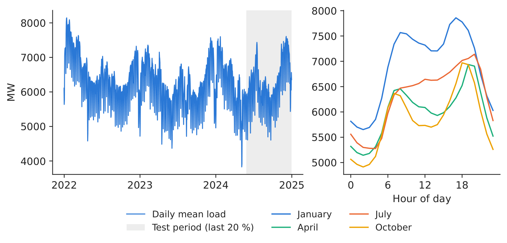
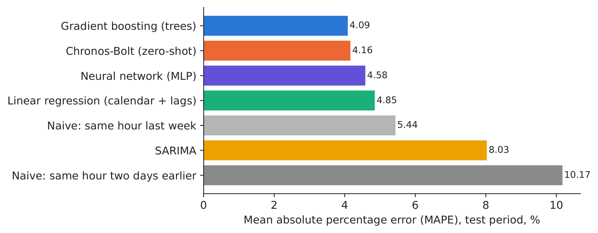
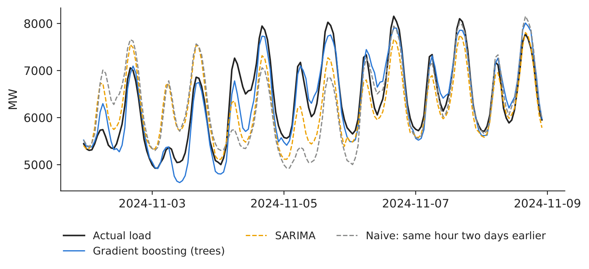
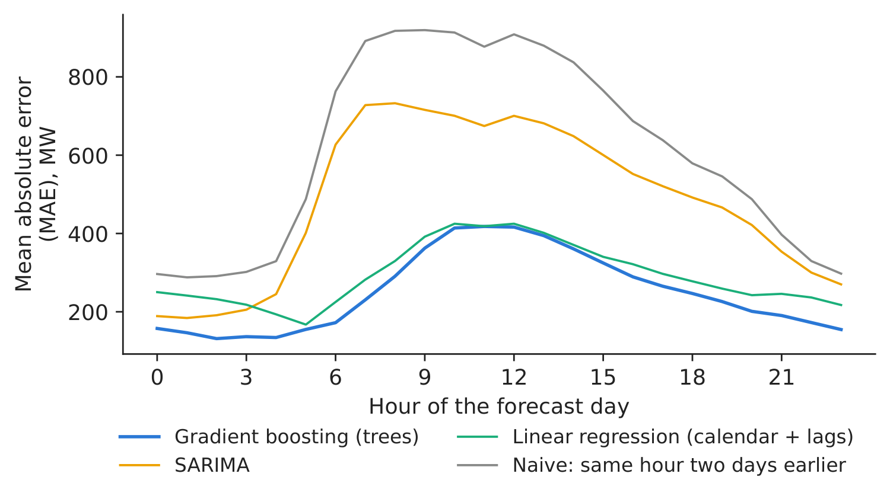

Case study 2 · Lecture 2
Day-ahead forecasting of national electricity consumption
Prof. dr. Daniel Traian PELE
Bucharest University of Economic Studies, Department of Statistics and Econometrics
Romanian Academy, Institute for Economic Forecasting
The paper
Proșcanu, C. A., Proșcanu, M. E., Pele, D. T. & Costea, A. (2025). Watt’s next? Benchmarking time series models on Romania’s national electricity consumption. Romanian Journal of Economic Forecasting, 28(3), 146–163. RePEc:rjr:romjef:v::y:2025:i:3:p:146-163
Materials
The business question
Every morning, a Romanian supplier or the balancing team of a producer must notify the transmission system operator (TSO), Transelectrica, of the volume it will consume or deliver in each hour of the next day. Every MWh of error becomes an imbalance, settled at a price that is usually worse than the day-ahead price. The head of trading must decide: which forecasting model do we run in production — a classical seasonal model, a machine-learning model, or a pretrained “foundation” model — and is the gain worth the cost?
What the paper did
Question. The paper benchmarks univariate forecasting models on Romania's national electricity consumption, (1) on predictive accuracy (MSE, mean squared error, MAE, mean absolute error, \(R^2\)) and (2) on the effect of model architecture (p. 147).
Data. Hourly national consumption, 1 January 2022 – 31 December 2024, 26,304 observations in MWh (sistemulenergetic.ro); mean 6,230.59, minimum 2,871.75, maximum 9,210.75 (Table 1, p. 149). Lowest demand at 2–5 a.m., peak around 7 p.m.; winter months highest (p. 150).
Method. Nine models: SARIMA (Seasonal AutoRegressive Integrated Moving Average), the neural networks N-BEATS, NHITS (Neural Hierarchical Interpolation for Time Series), LSTM (Long Short-Term Memory), Mamba, Titans and RetNet, and two pretrained foundation models used zero-shot, Chronos-T5 and TimesFM (Time Series Foundation Model). Look-back 168 hours, horizon 24 hours, chronological 80/20 split (Table 3, p. 157).
Main findings of the paper.
- “The N-BEATS model has been the most successful”, with MAPE (mean absolute percentage error) 2.324 % and “the highest coefficient of determination (\(R^2\) = 0.956)” (p. 158; Table 4, p. 157). N-BEATS “lowers MAPE from 3.63 % (SARIMA) to 2.32 %” (p. 159).
- RetNet and Titans also perform very well (p. 158–159).
- “TimesFM consistently underperforms” (MAPE 5.895 %, \(R^2\) = 0.673); Chronos-T5 is the fastest (7 seconds) with MAPE 3.325 % (p. 159; Table 4).
- SARIMA “remains a viable and efficient option” when resources are constrained; neural models suit capacity planning and renewable integration (p. 160).
The method, step by step
Intuition first
Consumption repeats itself: every day has the same shape, every week has quiet weekends, every year has cold winters. A forecasting model is a machine for copying the right past pattern and adjusting it. Simple models copy one pattern (“two days ago”, “last week”); better models learn which past hours matter and how much.
Let \(L_{d,h}\) be the load (MW) in hour \(h\) of day \(d\). At gate closure, 12:00 CET (Central European Time) on day \(d-1\), we forecast the 24 values \(\hat L_{d,0},\dots,\hat L_{d,23}\). At that time load is metered only up to the end of day \(d-2\), so:
- every model uses load data up to day \(d-2\) only (lags of at least 48 hours, plus \(d-7\));
- no value of day \(d-1\) is used, not even its daily mean.
The naive forecasts are \(\hat L_{d,h}=L_{d-2,h}\) (two days earlier) and \(\hat L_{d,h}=L_{d-7,h}\) (last week). SARIMA\((1,0,1)(1,1,1)_{24}\) models the 24-hour difference \(L_t-L_{t-24}\) as depending on its own past and on past errors. The linear regression and gradient boosting (an ensemble of small decision trees, each fitted to the errors of the previous ones) use lagged load (48, 72, 168, 336 hours), the mean of day \(d-2\), hour, weekday, month and holidays. The neural network maps the 168 hours up to the end of \(d-2\) directly to the 24 hours of day \(d\). Chronos-Bolt is a model pretrained on many public time series; it reads the 512 hours up to the end of \(d-2\) and outputs forecast quantiles without being trained on our data (zero-shot). Accuracy is measured on all \(N\) test hours with
In practice
The model choice is a money question: annual imbalance volume \(\approx\) MAE \(\times\) 8,760 hours \(\times\) your market share; multiply by the imbalance cost per MWh. A model is worth deploying if this saving exceeds its running and maintenance cost.
Replicate it yourself
Notebook C2_notebook_EN.ipynb: hourly load from ENTSO-E (European Network of Transmission System Operators for Electricity) via energy-charts.info (generation_ro_mw_hourly_utc.csv), the paper's sample and an 80/20 split; the test period starts on 27 May 2024 (217 forecast days).
Our series reproduces the paper's Table 1: 26,304 hours, mean 6,230.90 MW, minimum 2,871.75, maximum 9,210.75 — the same Transelectrica metering, published twice.

Figure 1. Daily mean load and the test period (left); mean hourly profile by month (right).
Source: energy-charts.info (ENTSO-E); 1.1.2022–31.12.2024.

Figure 2. Test MAPE by model.
Source: our forecasts; test period 27 May 2024–31.12.2024.
Table 1. Day-ahead forecast accuracy on the test period, 217 days \(\times\) 24 hours. Best value in bold (Bias closest to zero).
| Model | MAE, MW | RMSE (root mean squared error), MW | MAPE, % | \(R^2\) | Bias, MW |
|---|---|---|---|---|---|
| Gradient boosting (trees) | 250 | 339 | 4.09 | 0.879 | 32 |
| Chronos-Bolt (zero-shot) | 254 | 360 | 4.16 | 0.863 | 43 |
| Neural network (MLP, multilayer perceptron) | 284 | 393 | 4.58 | 0.837 | 80 |
| Linear regression (calendar + lags) | 292 | 383 | 4.85 | 0.845 | 19 |
| Naive: same hour last week | 335 | 474 | 5.44 | 0.762 | 17 |
| SARIMA | 483 | 634 | 8.03 | 0.575 | 34 |
| Naive: same hour two days earlier | 610 | 825 | 10.17 | 0.280 | 18 |
Source: our computation; Bias = mean of actual minus forecast.

Figure 3. One week of forecasts in November 2024.
Source: our forecasts; energy-charts.info.

Figure 4. MAE by hour of the forecast day.
Source: our forecasts; test period.
Our result. The best model on our test period is Gradient boosting (trees) with MAPE 4.09 % (MAE 250 MW, \(R^2\) = 0.879), followed closely by Chronos-Bolt used zero-shot (4.16 %). The naive “two days earlier” rule has 10.17 %, “last week” 5.44 %; our SARIMA reaches 8.03 %, with parameters estimated on 8 weeks and held fixed over the test, so it does not adapt to holidays and the summer. As in the paper, a pretrained model used zero-shot is competitive, and the ranking depends on the metric. The 10 %–90 % interval of Chronos-Bolt covered 85.1 % of the hours (target 80 %). Our numbers reflect our test window, forecast origin and model versions; the ranking is ex post (the “best” model is identified on the test period itself), so the saving below is an upper estimate. Decision number: for a supplier with 10 % of national consumption and an illustrative imbalance cost of 50 EUR/MWh, moving from the naive rule to the best model cuts the annual imbalance bill from 26.70 to 10.94 million EUR (saving 15.76 million EUR).
Discussion questions for managers
- Using the paper's benchmarking framework, what evidence would you need before choosing a model for production: seasonal performance, imbalance cost, runtime or maintenance?
- A pretrained model needs no training on your data. What are the risks of relying on a model you cannot inspect or retrain?
- Which hours of the day carry the largest errors (Figure 4), and are they the expensive hours for your portfolio?
- National load is smooth; your own portfolio (a few hundred clients, rooftop solar) is not. How would you expect the ranking of models to change?
- Is a MAPE improvement of one percentage point worth a data-science team? Use the decision number above and your own share and imbalance cost.
Limitations of the classroom replication
(i) Our models are univariate: no weather or economic drivers. (ii) One test window (late May – December 2024); rankings can change with the season. (iii) National load hides the behind-the-meter solar boom; a supplier's own portfolio is noisier. (iv) The imbalance cost of 50 EUR/MWh is an illustrative assumption, not a market statistic. (v) Our neural network and Chronos version are compact implementations chosen to run in class.
Case 2 at a glance
- QuestionWhich model should forecast tomorrow's hourly consumption, and is the gain worth it?
- DataHourly national load 2022–2024 (26,304 h), same series as the paper; last 20 % for testing.
- MethodNaive, SARIMA, regression, gradient boosting, neural net, Chronos zero-shot; MAE, MAPE, \(R^2\).
- ResultBest: Gradient boosting (trees), MAPE 4.09 % vs 10.17 % naive. Paper: N-BEATS 2.324 % vs SARIMA 3.63 %.
- DecisionDeploy a modern model if the imbalance saving (\(\approx\)15.76 mil. EUR/yr for a 10 % supplier) exceeds its cost.

Source: our forecasts on energy-charts.info (ENTSO-E) load; test period 27 May 2024–31.12.2024.
Abbreviations
| ARIMA | autoregressive integrated moving average |
|---|---|
| CET | Central European Time |
| ENTSO-E | European Network of Transmission System Operators for Electricity |
| LSTM | Long Short-Term Memory |
| MAE | mean absolute error |
| MAPE | mean absolute percentage error |
| MLP | multilayer perceptron |
| MSE | mean squared error |
| NHITS | Neural Hierarchical Interpolation for Time Series |
| RMSE | root mean squared error |
| SARIMA | seasonal ARIMA |
| TimesFM | Time Series Foundation Model |
| TSO | transmission system operator |
The text, numbers, charts and tables of this page are those of the case brief; every number is computed by the case notebook on the course data.